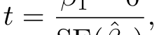
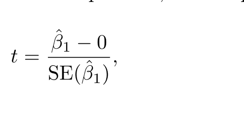
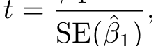
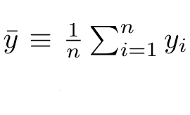

ISLP PDF to EPUB
Turning a 613-page LaTeX-set statistics textbook into a reflowable EPUB that reads on any e-reader
Verified and packaged.Educational and experimental only. No commercial use.
The book is not mine. All rights in the text, the figures and the mathematics of An Introduction to Statistical Learning remain with Gareth James, Daniela Witten, Trevor Hastie, Robert Tibshirani, Jonathan Taylor and Springer Nature, who give the PDF away free at statlearning.com. This project changes the format only, and claims nothing over the content.
531 expressions were cropped from the page and read back by AI vision models. Every one was checked a second time and a sample was audited by a different model family: 99.8% agreement, one error found and corrected. That measured the error rate; it did not remove it. Check any equation against the free PDF before you rely on it.
How the book is taken apart
Six stages. Nothing here guesses at the layout: every rule below was measured from the file itself before it was written down.
The mathematics, triaged
The starting assumption was that no mathematics could be recovered as LaTeX and that all of it would have to be read back out of images. That turned out to be true for only part of it. Sub- and superscripts are recorded in the PDF as a font-size drop plus a baseline shift, so most inline mathematics can be rebuilt exactly, for free, and stays as reflowing text. A vision model is spent only where the structure is genuinely absent.
-
5,974 · Plain HTMLSub- and superscripts recovered from glyph geometry. Reflows and scales; costs nothing.
-
185 · LaTeX from the character streamAccents and script letters, generated deterministically, then typeset by MathJax.
-
122 · Read by a vision modelFractions, radicals and large operators: structure the PDF simply does not record.
-
409 · Display equationsEvery centred equation, read from an image and verified against a re-typeset copy.
Where the crops went wrong
Cutting an expression out of the page was the hardest single problem in this conversion, and it took four attempts. A fraction is not on one line: its numerator, its rule and its denominator sit on three different baselines, and the text layer files them as three unrelated lines.






Every attempt, in order
11 worked, 3 partly worked, 6 failed outright. The failures are the interesting ones: each was caused by a rule that sounded reasonable and did not survive contact with the page.
-
01
Survey the tooling
workedTried Check what is installed: poppler, qpdf, ghostscript, python, node, codex.
Result No pandoc, no calibre, no Java. Decided to write the EPUB directly in Python for full control of the markup, and to write a structural validator because epubcheck needs Java.
-
02
Probe fonts and outline
workedTried Count every font and character in the file; read the PDF bookmarks.
Result 309 correct outline entries to build navigation from. Prose in Latin Modern, mathematics in Computer Modern: two disjoint families. Only 44 raster images in the whole book, so nearly every figure is vector art.
-
03
Extract mathematics as LaTeX from the text layer
partly workedTried Try to rebuild LaTeX directly from the PDF character stream.
Result Symbols come out correctly, structure does not: x_ij arrives as 'xij', a summation as ')d k=1'. But sub- and superscripts ARE recoverable geometrically, from the font-size drop plus the baseline shift.
Why The PDF stores glyphs and pen positions, not mathematical structure. Two-dimensional constructs (fractions, radicals, large operators, matrices) leave no trace in the character stream.
-
04
Deterministic LaTeX for accents and script letters
workedTried Generate LaTeX from character data for the cases where structure IS recoverable.
Result 497 occurrences solved with no model call at all, producing exactly right output such as \hat{Y} = \hat{f}(X) and \mathbf{A} \in \mathbb{R}^{r\times s}.
-
05
First end-to-end EPUB
partly workedTried Run the whole chain over the first 100 pages and read the result in a browser at the Kobo's 1264 × 1680 panel size.
Result A valid EPUB, but six visible faults: words glued together across spans, a ligature splitting 'fit' into 'f it' inside code, split captions, a column of stacked margin notes, a broken margin-note hyphenation, and paragraph indents that disagreed with the book.
Why Every one of them came from trusting a convenient rule instead of what the page actually measures.
-
06
Crop mathematics: box from one text line
failedTried Cut each expression out using the bounding box of its text line.
Result Fractions came out sliced through the middle: numerator and denominator missing.
Why A fraction puts its numerator, rule and denominator on three different baselines, and the extractor files those as three separate lines.
-
07
Crop mathematics: grow the box greedily
failedTried Grow the box to absorb any nearby mathematical glyph.
Result Crops swallowed the equation number (3.4) and two whole lines of the following paragraph.
Why Equation numbers are set in a Computer Modern font, so they count as mathematics; and once the box touches the next line it keeps growing.
-
08
Crop mathematics: clamp to the neighbouring baselines
failedTried Stop the box at the baselines of the paragraph lines above and below.
Result The denominator and the summation limits were cut off, and two expressions on one line swallowed each other.
Why An inline fraction genuinely reaches into the vertical band of the line below it, so no clean horizontal cut exists.
-
09
Crop mathematics: connected growth plus painted-out ink
workedTried Grow only along connected mathematical glyphs, never sideways along the base line; match stray numerator and limit fragments back to their host paragraph line; then paint over whatever foreign ink remains inside the rectangle.
Result Every expression is captured whole, with nothing else in the picture.
-
10
Painting out foreign ink erased the summation limits
failedTried Cover each foreign character with its bounding box.
Result Half of every summation limit disappeared.
Why The extractor reports each character's full em box, about 14.5 pt tall for 10 pt text, which reaches well into the neighbouring lines. Painting only the band from baseline - 0.78 x size to baseline + 0.24 x size fixed it.
-
11
Read the mathematics with a fleet of agents
workedTried 23 agents in parallel, 25 cropped expressions each, each given the characters the PDF gave up, the deterministic guess where one existed, and the sentence before the expression. Each agent then ran the LaTeX through MathJax and fixed anything it refused.
Result 570 expressions transcribed, zero typesetting failures.
-
12
The agents' doubts were worth more than their answers
workedTried Read the 40-odd cases the agents flagged as uncertain instead of only their LaTeX.
Result Three extraction faults surfaced that no amount of reading the LaTeX would have shown: 'crop is only a large left brace', repeated a dozen times; 'this crop is pixel-identical to another one'; and matrices cut in half.
-
13
Equation numbers were splitting equations in two
failedTried Group a display equation from the lines that make it up.
Result Fractions came out as two separate equations, both of which then grew back into the same rectangle and rendered twice.
Why An equation number sits on a baseline between the numerator and the denominator of the fraction it labels, so it fell in the middle of the run and broke it. The number is now split off its line before anything is classified.
-
14
Piecewise definitions kept coming apart
partly workedTried Absorb the 'if ...' arms of a cases block into the equation they belong to.
Result Fixed in three rounds. Requiring the arm to start further in than the equation failed where the arm carries the brace glyph itself; requiring a display line to follow failed for the last arm; matching a stray brace back to the paragraph above threw away the opening delimiter.
Why The final rules: an arm is absorbed when it carries mathematics, is short and is set in from both paragraph margins; overlapping display blocks are merged; and a fragment belongs to a paragraph line only if it sits over that line's own symbols.
-
15
Tables as markup rather than pictures
workedTried Read the 36 tables back as XHTML so they reflow with the reader's font, each agent checking its own markup parses and every row is the same width.
Result 36 of 36 converted, faithful to the printed minus signs and to '< 0.0001' with a space in one chapter and without one in another. Two agents reported their crop was wrong and re-rendered the page themselves; both were real region-detection faults, now fixed.
-
16
Audit what the conversion drops
workedTried Walk all 613 pages, work out which text lines no block consumed, and read them.
Result 25,605 lines considered, 393 unconsumed. All but ten are equation numbers folded into their equation, or numerator and limit fragments already inside a mathematics crop. The ten were cell output that spilled past its shaded rectangle.
-
17
Check every expression against the printed page
workedTried In the third round, typeset all 555 transcriptions with MathJax, rasterise them, stack each under the crop from the PDF, and give 23 agents one instruction: find where the transcription is wrong.
Result 500 same, 53 cosmetic, 2 genuinely wrong: 99.6% of that round agreed with the page. The two errors were a dropped first row of a two-row equation, and square brackets typeset as round ones. Later rounds changed the crops, so the final figure is the 99.8% reported below.
-
18
An independent second opinion found what the family missed
workedTried Hand 45 of the same comparison images to OpenAI's codex CLI, a different model family with no sight of the earlier answers.
Result In that round, 44 of 45 agreed. The one disagreement was right and mattered: a crop had captured a fraction's denominator and nothing else, and every check inside the pipeline had passed it because the transcription faithfully matched the picture. The picture was the problem. Fixing it took three changes to the extraction. The final audit, run after those fixes, sampled 50 and found no disagreement.
Why Every other check here was Claude checking Claude. The only check from outside the family found the fault, in a sample of 45.
-
19
Iterate until the extraction stops changing
workedTried Each round of fixes changes the crops, so re-extract, carry over every transcription whose image is byte for byte identical, and read only the rest.
Result Five rounds: 570 expressions read, then 61, then 32, then 59, then 15, then 0. The last re-extraction produced 531 crops of which 531 were unchanged. Those 531 are the expressions the three checks below report on.
-
20
Printing an equation twice
failedTried Let display equations and inline expressions be found independently.
Result An equation with words in it ('minimize ... subject to ...') reads as a paragraph, so its inline images already held the whole equation, while the symbol-only lines also produced a display block. The equation was typeset twice.
Why Fixed by measuring the inline expressions on a page first and dropping any display block that one of them already covers.
Three checks, three kinds of evidence
One model marking its own work is not evidence. These are deliberately different in kind: one costs nothing and cannot be talked round, one looks at the pictures, and one comes from outside the family.
Deterministic and free. The PDF's text layer loses structure but not symbols, so the symbols a transcription claims can be compared against the symbols the page holds. 484 expressions had enough symbols to score; mean agreement 0.951.
Every one of the 531 expressions was typeset, put under the crop from the PDF, and handed to an agent told to find the difference. 481 identical, 49 differing only in spacing or delimiter size, 1 genuinely wrong and corrected.
A sample of 50 of the same comparisons was re-read by a different model family entirely, through OpenAI's codex command line tool, with no sight of the earlier answers. This is the only figure here not produced by the model that did the work.
Choices made for the reader, not for one device
| Decision | Reason |
|---|---|
No embedded font, no font size on body |
The reader's own typography controls keep working. |
Mathematics sized in em, in two books: one with SVG, one with PNG |
It grows with the text instead of staying pinned to pixels. An <img>
is a separate document, so currentColor alone always painted the
mathematics black; the two rules inside each SVG file let it follow a dark theme.
Moon+ Reader on Android draws no SVG at all and shows a box marked SVG in its place,
so the same expressions are drawn as PNG for a second book, from the same files. |
| Figures at 300 ppi, in colour | The book draws one series in orange and the next in blue, and the two have almost the same luminance. A grey rendering painted them the same shade, and the series could not be told apart. A grey screen converts the colour itself. |
| No colour set without its partner, and a dark-scheme block | A reader that repaints the page with its own colours cannot then leave dark text on a light block. |
| Margin notes collapsed to one quiet line | A 7 inch page has no margin to spare; stacked in a column they took a third of the screen. |
Lab cells as pre with wrapping |
An e-reader cannot scroll sideways, so a long line must wrap rather than be cut off. |
A toc.ncx beside the EPUB 3 navigation document |
Kobo still reads the older navigation file. |
Reproducing this
uv sync && npm install uv run python src/probe_structure.py # chapters, index, page zones uv run python src/extract_math_jobs.py # crop every expression to read # transcription and verification write work/math_final.json uv run python src/build_epub.py --out ISLP.epub uv run python src/validate_epub.py output/ISLP.epub uv run python src/build_index.py # regenerate this page ./src/make_story_pdf.sh # and its PDF